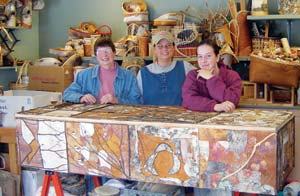

It began as a joke, as many good ideas do. Build your own coffin? Hey … that’s a great idea! Let’s build a coffin and decorate it with birch bark and twigs. What a great tribute to our friend and teacher Ardella Hagen (above, far left). A loving gift to the elder who got us started talking with trees and making baskets.
Ardella resides in Talkeetna, Alaska, where she has been working with birch bark and creating exceptional baskets for more than 14 years. Her signature baskets are delicately embellished with spruce root and birch bark leaf designs, making a sturdy birch bark container a work of art.
We are her groupies - the students that she has taken under her wing and who have stayed awhile longer to learn more. Ardella is the best kind of instructor because she tells you everything: how to fold a bit here, where to line things up, hints to make the job easier, when to harvest bark and where to get supplies. Our gift back to Ardella was to make her an eternal resting place surrounded by the materials she loves.
Carpenters we’re not, so we enlisted the help of our friend Burt Durham to cut out the coffin parts. After we finished “cutting up,” the boards were glued and screwed into place according to the blueprints from the “Handmade Caskets” article (April/May 2003). We divided the sides of the coffin into four 18-inch sections and assigned one section per devotee to create a birch bark interpretation.
Ardella provided a stash of birch bark to work from, and armed with loppers and pruning shears, we hit the brush to come up with the twigs needed for the job. Spruce root, animal silhouettes, pressed leaves and antler buttons were used to embellish our birch bark masterpieces.
Until the time comes for its intended purpose, Mac-abre (as the coffin has been lovingly dubbed) will be utilized as a coffee table and storage space. Ardella figures it’ll be a good long while yet before she and Mac make the journey. Until then, it’s a wonderful gift back to a truly generous artist from her friends and family of the birch bark clan.
Jill Choate
Trapper Creek, Alaska
|
 JILL CHOATE This casket was designed for Ardella Hagen (far left) by her friends and students. Hagen has been working with birch bark and creating baskets for 14 years. |
|
|